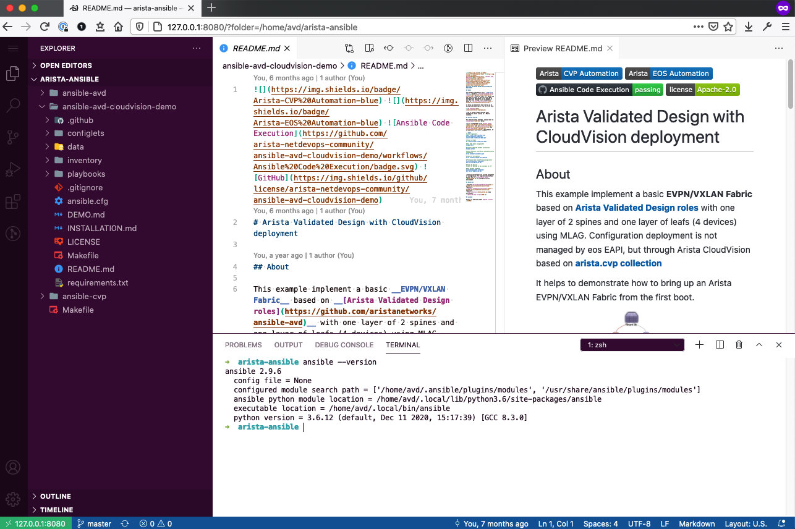

VScode Container
Setup Ansible AVD with VSCode container¶
Arista AVD provides an easy way to setup a lab or demo environment by using a pre-configured VScode container with a web interface to connect and edit files.
This container can be leveraged in different ways like demo, remote lab, training sessions, development solution, … In this page we will focus only on how-to play with AVD demo content.
VScode container overview¶
This container is based on a AVD base image with an installation of VScode server using code-server implementation.
This container comes with a set of options available to let you customize your own environment:
Generic settings¶
AVD_MODE: If set todemo, container will install AVD content to test it fromget.avd.sh. (Supported mode:['demo', 'toi'])AVD_PASSWORD: Allow user to set a password to use for VScode authentication. If not set, access is not protected by any password.AVD_GIT_USER: Username to configure in.gitconfigfile.AVD_GIT_EMAIL: Email to configure in.gitconfigfile.AVD_USER_EXTENSIONS_FILE: Allow user to installed additional VScode extensionsAVD_USER_REPOS: Path to a text file in your container with a list of repository to clone (1 repository per line)AVD_USER_SCRIPT: Path to a shell script to execute during entrypoint execution.
User settings¶
These settings must be used to mount and edit file from your physical host.
AVD_UID: set uid for avd user in container.AVD_GID: set gid for avd user in container.
Container also comes with docker installed and in case you want to run docker from your container, you can expose your local docker socket from your host to your container:
Requirements¶
To run this container, few requirements are expected:
- Docker installed on a host: laptop, VM, server or anything that run docker
- Git configured with at least username and email
# Set your user name to display in git commit
$ git config --global user.name "John Doe"
# Set your email address to use in git commit
$ git config --global user.email johndoe@example.com
Get AVD demo in VSCode¶
We will ask container to automatically install the following content in your container:
- Ansible Arista Validated Design collection using GIT (devel) version.
- Ansible Arista Cloudvision collection using GIT (devel) version.
- AVD with Cloudvision demo repository
Note
Container will listen on port 8080 but it can be changed accordingly by using docker cli
docker run --rm -it -d \
-e AVD_MODE=demo \
-e AVD_GIT_USER="$(git config --get user.name)" \
-e AVD_GIT_EMAIL="$(git config --get user.email)" \
-p 8080:8080 \
avdteam/vscode:latest
Warning
In this setup, container will be destroyed after you stop it. And because we do not share any volume, all changes will be lost.
Once your container is started, confirm with docker command:
$ docker ps
CONTAINER ID IMAGE COMMAND CREATED STATUS PORTS NAMES
0fd39cc2dd3d avdteam/vscode:latest "/bin/entrypoint.sh" 10 seconds ago Up 9 seconds 0.0.0.0:8080->8080/tcp inspiring_germain
And you can now connect to your VSCode instance using your favorite browser with the following URL:
http://<IP ADDR of DOCKER Machine>:8080/?folder=/home/avd/arista-ansible

Customize your container¶
Once you run your first AVD demo, you may want to not use non-volatile storage or install your own repositories.
Mount your local folder¶
The first option is to mount one of your local folder to save your work from your container. Considering your local folder is empty, you can add this line to your docker CLI:
-v ${PWD}/:/home/avd/arista-ansible
So complete CLI should be:
docker run --rm -it -d \
-e AVD_GIT_USER="$(git config --get user.name)" \
-e AVD_GIT_EMAIL="$(git config --get user.email)" \
-v ${PWD}/:/home/avd/arista-ansible \
-p 8080:8080 \
avdteam/vscode:latest
Install additional repositories¶
Now, you want to ship your own demo in your container with git clone instead of local file sharing, you can leverage the following option: AVD_USER_REPOS
docker run --rm -it -d \
-e AVD_GIT_USER="$(git config --get user.name)" \
-e AVD_GIT_EMAIL="$(git config --get user.email)" \
-e AVD_USER_REPOS=/home/avd/arista-ansible/my_repos.txt \
-v ${PWD}/:/home/avd/arista-ansible \
-p 8080:8080 \
avdteam/vscode:latest
And then your my_repos.txt file should be like:
https://github.com/aristanetworks/ansible-avd.git
https://github.com/aristanetworks/ansible-cvp.git
Note
By default Docker cannot load a file from your host, the path you provide in AVD_USER_REPOS must be configured using a shared volume.
For more details and options, you can check our repository for this container: arista-netdevops-community/docker-avd-vscode